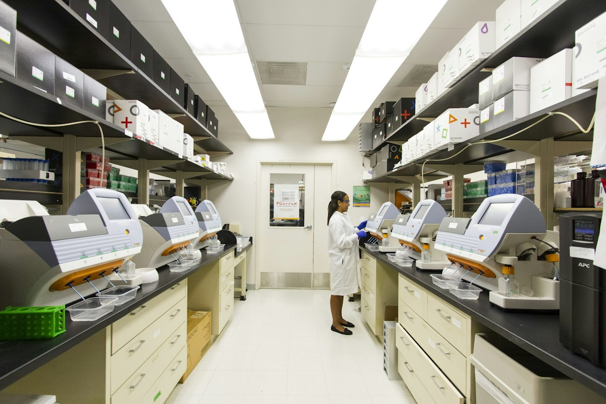

Clinical programming
Build SDTM and ADaM datasets, tables, listings and figures with documented quality checks.
Explore programming servicesFogap supports sponsors and CROs with CDISC-aligned datasets, statistical analysis, tables, listings and figures, and quality-controlled study outputs.

From standardized tabulation and analysis datasets through reporting, with quality checks and documentation built into delivery.
Scale the right expertise around your study, from analysis planning to submission-ready outputs.
Build SDTM and ADaM datasets, tables, listings and figures with documented quality checks.
Explore programming servicesGet support with study design, statistical methodology, analysis plans and clinical reporting.
Explore biostatistics servicesImprove repeatability with automated workflows, independent review and traceable documentation.
Explore quality supportReview the protocol, data, standards and timeline to agree on the right delivery plan.
Develop datasets and outputs with QC, documentation and traceability built into the work.
Provide documented deliverables and support sponsor review, updates and handover.